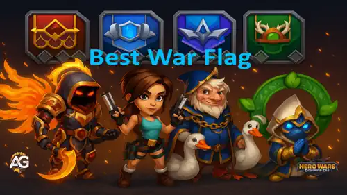

In Hero Wars: Dominion Era, War Flags are more than just symbols they're powerful tools to enhance your team’s performance in battle and exploration. But with six different types available, which ones truly stand out? Whether you're diving into PvP arenas or tackling intense adventures, this guide helps you choose the best War Flags to support your heroes and pets. Get ready to maximize your team’s potential!
We currently have six unique War Flags, each offering special bonuses that strengthen your entire team not just one hero. From improving team-wide abilities to unlocking powerful skills, these flags play a crucial role in high-level PvP and adventure strategies. In this guide, we’ll explore which War Flags perform best and explain what makes each one valuable.
Each War Flag includes up to 3 pattern slots that can be customized with extra attributes like Magic Attack, Magic Defense, Physical Attack, Armor, Armor Penetration, Magic Penetration, or even Evasion Reduction. Mastering these patterns allows you to fine-tune your strategy and give your team a crucial edge in every battle.

Best War Flag in Hero Wars: Dominion Era, a game developed by Nexters.
Want to know where to find a War Flag every month? Check out our Mysterious Island Guide on Alexandre Games. We provide monthly tips to help F2P players locate War Flags during the Mysterious Island event.
Customize your War Flag with powerful patterns and equip your heroes to unleash their full potential. Let’s dive into the best War Flags for Hero Wars: Dominion Era!
Top War Flags Ranked for Team Impact in Hero Wars: Dominion Era
Not all War Flags are created equal. Some provide strong universal buffs that elevate your entire team's performance in both PvP and PvE. Below is our updated ranking of the best War Flags, including the newly introduced War Flag of Readiness, based on synergy, skill enhancement, and usefulness in current meta compositions.
1. War Flag of Pet Strength:
Increases Pet Skill Power by 10%, making your pet-based skills significantly stronger.
Axel, Khorus and Team Benefit: One of the strongest flags overall. Axel gains more healing buff and shield power from Bubbles of Justice. Khorus enhances his Resilience Aura, making shields more durable and increasing the chance to block debuffs. A must-have for pet-based team builds.
2. War Flag of Readiness:
Gives 100 energy to the rearmost Hero in your team at the start of the battle. This effect repeats every 20 seconds. Every red pattern applied increases the amount of bonus energy by 20.
Strategic Benefit: Extremely powerful when paired with backline supports like Aidan (faster shield activation) or damage dealers like Lara Croft and Artemis, who can charge ultimates more quickly. Since the backline position can shift depending on the team, this flag is versatile and highly impactful in both PvP and PvE. Timing energy boosts allows ultimates to swing fights dramatically.
3. War Flag of Recovery:
Increases all healing done by your heroes by 10% — perfect for sustain-heavy teams.
Guus, Martha, Thea, Celeste and Team Benefit: Ideal for PvP defense and long fights. With meta healers like Guus, Thea and Martha, this flag amplifies healing output, creating hard-to-break formations.
4. War Flag of Frost:
Every 18 seconds, casts Frost on all enemies, lowering their skill levels by 2 for 8 seconds.
Team-Wide Benefit: Decreasing enemy skill levels weakens their damage, control, and healing. Great for disrupting enemy plans, especially in long PvP fights or against maxed-out enemies.
5. War Flag of Swift Warriors:
Reduces skill cooldowns for Warrior heroes by 5% and speeds up their basic attacks.
Ishmael, Lyria, Arachne, Qing Mao and Team Benefit: Very useful when running warrior-heavy teams. Faster basic attacks help generate energy faster. While not all warrior skills benefit directly from cooldown reduction (e.g., Yasmine), this flag can accelerate ultimate charge and combo potential.
6. War Flag of Decline:
Reduces enemy healing by 10% across the entire enemy team.
Counter Benefit: A decent choice against heavy healing teams, but often outclassed by heroes like Celeste or pets like Biscuit who already reduce healing. Best used in synergy with those units rather than alone.
7. War Flag of Fervor:
Increases energy gain for all Tanks by 10%, helping them use abilities more often.
Rufus, Aurora, Galahad and Tank Benefit: Strong for classic tank comps, but less useful in today’s meta where warriors like Dante or Lyria are often used in the tank position. Still top-tier if you're building around dedicated tanks.
Best War Flag Patterns to Use and What to Prioritize
Choosing the right Patterns for your War Flag can elevate your team’s performance across PvP and PvE. Each Pattern adds permanent stat bonuses, and combining the right effects can significantly increase your win rate. Below is a full breakdown of all available Patterns and which ones offer the most strategic value.
🛡️ Armor: This pattern reduces physical damage taken, making it extremely valuable against heroes like Dante, Ishmael, and Qing Mao. High-tier Armor patterns can block more than 50% of incoming physical damage. A top choice for defensive builds and protecting squishy backliners.
🗡️ Physical Attack: Directly increases damage dealt by warriors and marksmen. Useful for heroes like Lara Croft, Qing Mao, Ishmael, and Galahad. Choose this pattern if your team relies heavily on sustained physical pressure.
✨ Magic Attack: Boosts damage output for mages. Perfect for teams built around Aidan, Augustus, Iris, or Heidi. Strong against physical-heavy enemy teams and ideal when you want to rely on high-impact magical damage.
⚔️ Armor Penetration: Similar to Magic Penetration, this stat allows physical damage to ignore a portion of the enemy’s Armor. It's a must for high-DPS physical attackers like Dante, Yasmine, or Keira, ensuring their damage lands at full force.
🔥 Magic Penetration: Increases the ability of magical attacks to bypass enemy Magic Defense. Works incredibly well with heroes whose damage scales with Magic Attack and who face high-resistance enemies. Great synergy with Polaris, Iris and Orion.
🯠Enemy Dodge Reduction: Lowers the enemy team’s dodge stat, helping physical teams land hits more reliably. This is especially powerful against evasive heroes like Dante, effectively shutting down dodge-based defenses.
🌀 Magic Defense: Provides resistance against incoming magical damage. While more situational, it can be helpful against teams with heavy mage presence. Prioritize only if you're frequently facing teams led by strong mages like Iris or Krista.
🚫 Enemy Critical Hit Chance Reduction: Reduces the chance of enemies landing critical hits. A defensive option that helps against crit-heavy teams like Ishmael, or Jhu. Especially useful if you’re trying to protect fragile supports or control units.
Pattern Priority Ranking
Armor – Best overall defense against physical teams. Crucial in current PvP meta.
Physical Attack – Strong on warrior-centric teams, especially with sustained DPS.
Magic Attack – Amplifies damage for your core mages. High synergy and reliability.
Armor Penetration – Key for physical carry heroes to bypass defenses.
Magic Penetration – Breaks through magic defenses; essential for full mage builds.
Enemy Dodge Reduction – Great against Dante and dodge-focused teams.
Magic Defense – Low priority, only useful in mage-dominated matchups.
Enemy Crit Chance Reduction – Niche but valuable against crit-based burst teams.
How to Upgrade War Flag Patterns
To level up your Patterns, you'll need two of the same tier and a resource called Golden Thread. Each upgrade stage requires more materials, and combining Patterns follows a specific progression. Here's a summary of the cost per tier:
Green Pattern: 2x Grey + 150 Golden Thread
Blue Pattern: 2x Green + 300 Golden Thread
Violet Pattern: 2x Blue + 600 Golden Thread
Orange Pattern: 2x Violet + 750 Golden Thread
Red Pattern: 2x Orange + 1500 Golden Thread
Red Ultimate Pattern: 3750 Golden Thread (no fusion required)
Red Ultimate Patterns are special because they don’t require any lower-tier patterns to craft. You can also reroll them as many times as needed for 3750 Thread each, giving you the freedom to chase the perfect stat for your team composition.
Enhancing Patterns
Patterns progress through seven upgrade levels — White → Green → Blue → Violet → Orange → Red → Ultimate — with each step offering a stronger bonus. Below is a full comparison of all stat types and how their values scale with upgrades.
War Flags and their Patterns are powerful tools that can dramatically shape your success in Hero Wars: Dominion Era. By choosing the right flag and customizing it with smart pattern combinations, you can amplify your team’s strengths, patch up weaknesses, and gain an edge in both PvP and Adventure battles. Whether you're building around pet synergy, boosting your mages, or shutting down dodge-heavy teams, every choice counts.
Focus on enhancing the core of your strategy sustain, damage output, or control and upgrade your patterns wisely using Golden Thread. With each improvement, your team becomes more efficient, more durable, and more dangerous to face. The right setup can mean the difference between a close loss and a decisive victory.
Did you like our Best Wars Flag Guide for Hero Wars Web and Facebook? Is there something you didn't understand or would like to suggest changes to? We invite you to join our comment section on the Alexandre Games Blog page. Feel free to express your opinion, clarify your doubts, and share your suggestions. Click the button below to get started:


 Hero Wars Dominion Era: Character Guides - Dominate with Every Hero
Hero Wars Dominion Era: Character Guides - Dominate with Every Hero
 Complete Pet Guide for Hero Wars: Dominion Era
Complete Pet Guide for Hero Wars: Dominion Era
 Hero Wars: Dominion Era Tier List 2025 Best Heroes Ranked
Hero Wars: Dominion Era Tier List 2025 Best Heroes Ranked
 Complete Guide to Pet Adventure Maps for Hero Wars: Dominion Era
Complete Guide to Pet Adventure Maps for Hero Wars: Dominion Era